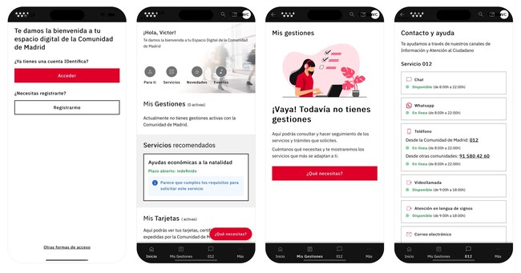
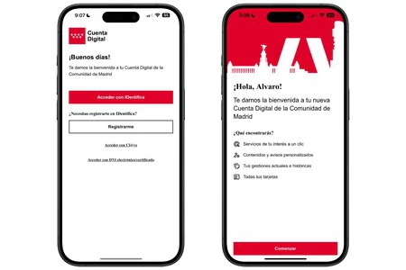
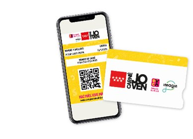

Background
Madrid Digital is the agency responsible for the digital transformation of the Comunidad de Madrid — one of Spain's largest regional administrations, serving over 6.8 million people across healthcare, education, housing, employment, and more.8 million people across healthcare, education, housing, employment, and more.
The challenge was not just visual. Citizens were navigating a fragmented landscape of outdated services, inconsistent interfaces, and bureaucratic friction. The redesign had to be technically feasible and genuinely usable for a population with vastly different digital literacy levels.
"Ser la Administración Digital referente en la prestación de servicios públicos digitales." — Madrid Digital Vision Statement
Cuenta Digital — onboarding
The onboarding flow was one of the most critical UX challenges — connecting citizens to their digital identity (IDentifica), setting up their personalised space, and surfacing relevant services immediately. The design had to work for first-time digital users as well as experienced ones.


UX process
The redesign was grounded in research conducted at every level of the administration — from front-line civil servants processing daily requests, to technical teams managing back-end workflows, to department heads defining service requirements. Understanding the full chain was essential: a citizen-facing improvement that creates friction for the gestores managing it isn't a real improvement.
Research sessions included structured interviews with funcionarios, técnicos, and jefes de servicio across multiple departments. Each group had different pain points, different technical constraints, and different definitions of what "working" looked like — reconciling those perspectives into a single coherent design direction was the core design challenge.
UX process — forms & document submission
Existing forms had accumulated years of legacy requirements — mandatory fields that no longer served a purpose, document upload flows with unclear error states, and step structures that didn't match how users actually approached the task. The redesign was a systematic audit and rebuild of the existing form library, not a visual refresh.
Key changes across the form system:
Citizen side
Gestor side
UX process — notifications & resolutions
One of the most consistent findings across all research sessions — with citizens and gestores alike — was the breakdown in communication at critical moments: when a procedure was received, when additional documentation was needed, and when a resolution had been issued. Citizens had no visibility into where their request stood. Gestores had no reliable way to reach them.
The notification system was redesigned end-to-end, covering both the citizen experience in Cuenta Digital and the tools gestores use to trigger and manage communications:
Featured service redesign
Among the 220+ services redesigned, the Carnet Joven digitisation stands out as a case study within the case study. It required rethinking not just an interface, but an entire service model — translating a physical card with 30+ years of history into a native digital experience integrated within Cuenta Digital.

Carnet Joven — 4 journeys redesigned
Journey 01
Discovery
Find the card, understand benefits, and get motivated — without leaving Cuenta Digital.
Journey 02
Application
Full digital application via Cuenta Digital, verified with IDentifica. No bank branch visit.
Journey 03
Card management
Digital card lives permanently in the Tarjetero. Renewal and replacement in one tap.
Journey 04
Benefit discovery
Geolocated, personalised offers surfaced in-app — Parque de Atracciones, Warner, Faunia and 2,000+ more.
Outcomes
Cuenta Digital reached nearly 10 million accesses in 2025 — with over 220 digital services available, including the newly integrated Carnet Joven.
218,000 public employees use the redesigned systems daily — across healthcare, education, justice, and housing.
Digital Strategy 98.98.4% of the Digital Strategy was executed ahead of schedule, with the design work cited as a key enabler of delivery speed.
Carnet Joven new registrations grew 7.8% year-on-year following the digital launch. Cuenta Digital awarded Premio Innovaics 2025.
Madrid Digital — Comunidad de Madrid
Madrid Digital is the digital transformation agency of the Comunidad de Madrid — one of Spain's largest regional governments, serving over 6.8 million people.8 million people. It is responsible for the digitisation of all public services across the region, spanning healthcare, education, housing, employment, taxation, and justice. In 2025 it was recognised as Spain's leading example of innovative public administration.